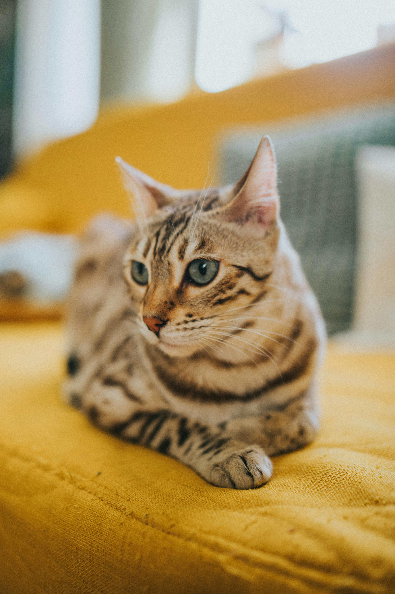
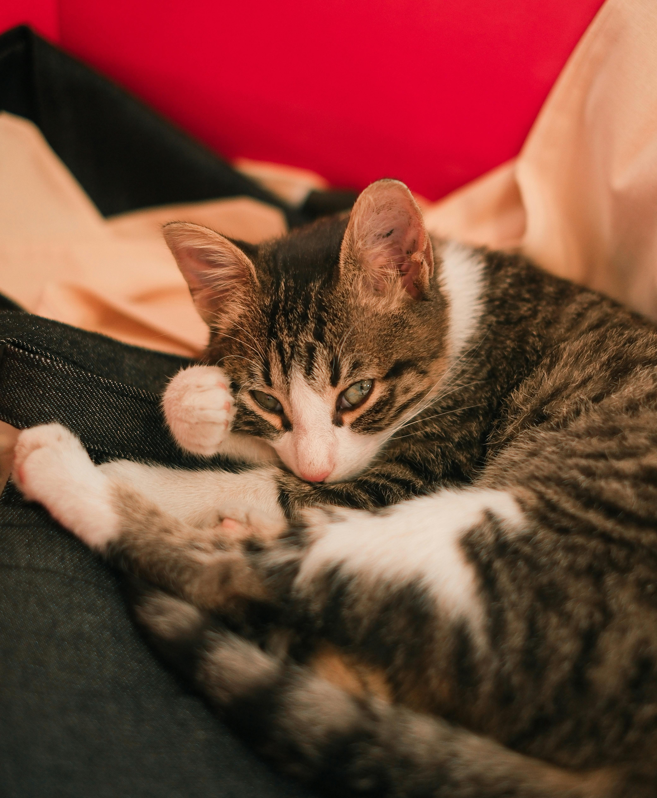
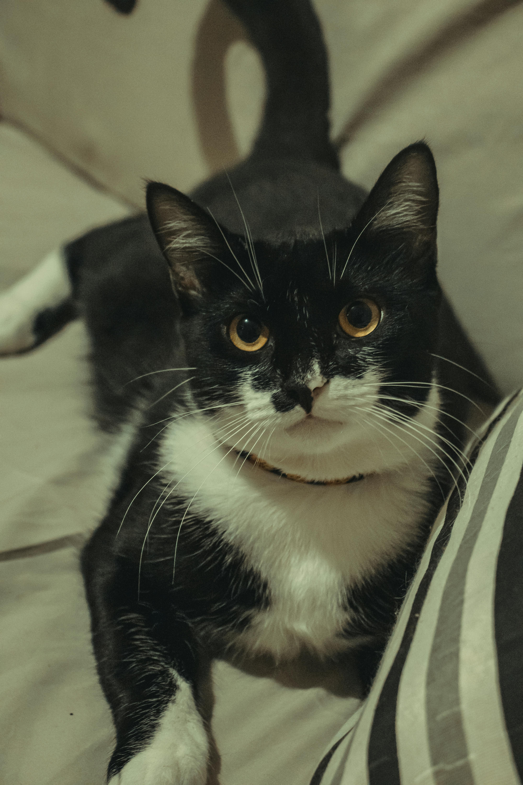
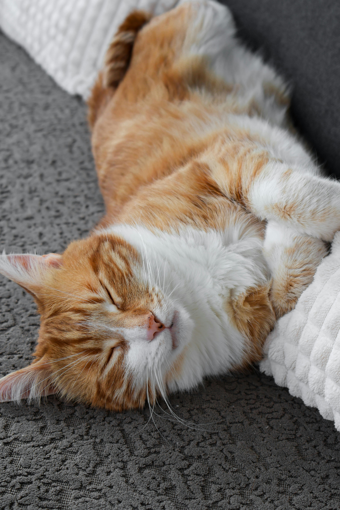
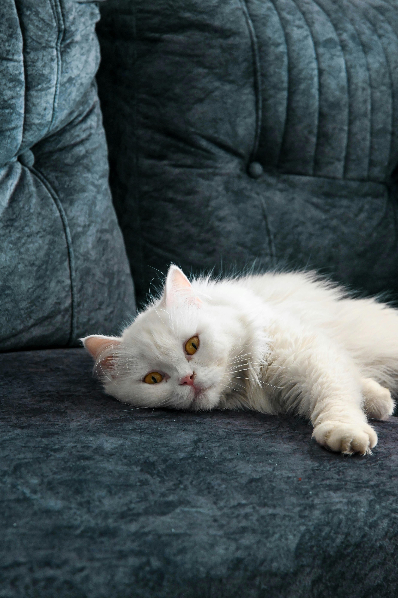

Bun venit la PetAdopt!
Găsește-ți viitorul prieten blănos printre micuții de mai jos.
Pisici disponibile pentru adopție
| Poză | Nume | Vârstă | Gen | Rasă | Descriere | Acțiune |
|---|---|---|---|---|---|---|
 |
Luna | 1 an | F | Bengal mix | Luna este o pisică elegantă și foarte atentă la tot ce se întâmplă în jur. Are un temperament curios și iubește să exploreze. Ideală pentru un mediu activ, unde poate primi atenție și joacă. | |
 |
Mimi | 2-3 luni | F | European Shorthair | Mimi este o pisicuță mică și foarte afectuoasă. Adoră să stea în brațe și să se joace. Este perfectă pentru cineva care își dorește un companion iubitor încă de la început. | |
 |
Oreo | 1 an | M | Tuxedo cat | Oreo este un motan jucăuș și sociabil, cu o personalitate foarte prietenoasă. Se adaptează ușor și iubește interacțiunea cu oamenii. | |
 |
Simba | 2 ani | M | Domestic Longhair | Simba este un motan liniștit și relaxat, care adoră să doarmă și să se bucure de confort. Ideal pentru un mediu calm și stabil. | |
 |
Snow | 3 ani | F | Persian mix | Snow este o pisică calmă și elegantă, cu un aer regal. Preferă liniștea și confortul, fiind perfectă pentru cineva care caută un companion relaxat. |